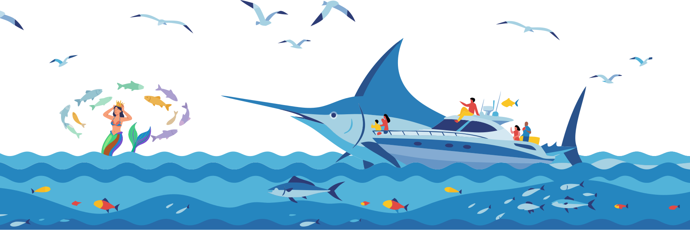

小窑湾海钓产业园
品牌设计系统
面向综合文旅型海钓产业园的全套视觉规范体系。涵盖色彩、字体、间距、组件库与动效规范，服务于园区导览、品牌宣传、线下物料等多场景应用。
设计原则
海洋原生
色彩与视觉语言源自黄海海域的自然调性，以深海蓝为根基，暖沙金为点缀，传递海洋文旅的松弛与活力。
系统一致
通过设计令牌（Design Tokens）统一管理所有视觉参数，确保从线上到线下、从导览到印刷的全链路一致性。
灵动有度
动效设计借鉴海浪节律，以自然流畅的过渡和恰到好处的微交互，提升体验品质感而非炫技。
色彩系统
以黄海海域的自然色彩为灵感，构建主色 + 3 辅助色的四级色阶体系。内置 24 套精选色彩方案，支持实时切换预览与自定义方案创建。
色彩方案 Color Schemes
选择内置方案可实时预览整套设计系统的色彩变化。点击「自定义方案」可创建专属配色。
配色插画 Illustration
以海钓场景为载体，实时展示当前配色方案在实际插画中的视觉效果。切换上方配色方案，插画颜色将同步变化。

主色 Primary — 深海蓝
核心品牌色，传递专业、可靠、海洋原生感。适用于主要操作、关键信息、品牌标识等场景。50-900 共 10 级色阶，覆盖从浅底到深色的全范围使用需求。
--color-primary-500: #1A7FA0; /* 品牌主色 — 按钮、链接、重点标识 */
--color-primary-100: #C5E3ED; /* 浅底色 — 卡片背景、选中态 */
--color-primary-700: #105872; /* 深色 — 标题、深底文字 */
辅助色 1 Secondary 1 — 暖沙金
灵感源自大连海岸线的金色沙滩与夕阳余晖。用于次要操作、价格标注、星级评分、成就徽章等需要温暖感的场景。
辅助色 2 Secondary 2 — 海沫青
灵感来自海面泡沫与浅滩碧波。用于信息提示、图标点缀、数据可视化、辅助背景等需要清新感的场景。
辅助色 3 Secondary 3 — 珊瑚橙
用于高亮标注、交互反馈、重要提醒等需要视觉突出的场景。克制使用，控制面积在 5% 以内。
中性色 Neutral — 墨岩灰
用于文本、边框、背景等结构性元素。从纯白到近黑共 11 级，确保在深浅背景上都有足够的对比度。
语义色 Semantic
用于传达系统状态信息。每种语义色提供浅底（50）、标准（500）、深色（700）三个层级，适配不同背景需求。
海洋渐变 Gradients
预设渐变组合，灵感来自小窑湾海域不同时段的光影变化。适用于 Hero 区域、卡片装饰、分割线等大面积色块场景。
色彩使用规范
推荐做法
- ✓主色占页面色彩面积的 60% 以上
- ✓辅助色 1 占页面色彩面积的 25%，用于次要操作和背景
- ✓辅助色 2 占 15%，辅助色 3 控制在 5% 以内
- ✓文字与背景对比度不低于 4.5:1 (WCAG AA)
避免做法
- ✗在深色背景上使用低对比度的浅色文字
- ✗同时使用三种品牌色作为大面积背景
- ✗语义色用于纯装饰目的
- ✗渐变方向和角度不统一
字体排版
中英双语字体体系，兼顾中文阅读体验与英文设计表现力。采用 DM Sans + Noto Sans SC 的组合，在标题场景搭配 Playfair Display 提升品质感。
字体族 Font Families
展示字体。用于 Hero 标题、品牌大字、视觉焦点文字。搭配中文回退 Noto Serif SC。
界面字体。用于标题、正文、按钮、标签等所有 UI 文字。搭配中文回退 Noto Sans SC。
等宽字体。用于代码展示、数值数据、技术参数等场景。
字号阶梯 Type Scale
基于 Major Third (1.25) 比例构建的 10 级字号阶梯，从 12px 到 61px，覆盖所有使用场景。
字重 Font Weight
间距与网格
基于 4px 基准单位的间距系统，确保所有元素间的节奏感一致。12 列弹性网格提供灵活的布局能力。
间距阶梯 Spacing Scale
网格系统 Grid
12 列网格，间距 24px (var(--space-6))，最大容器宽度 1440px。支持响应式断点：640px / 768px / 1024px / 1280px。
阴影与圆角
层级分明的阴影系统与统一的圆角规范，构建界面元素的立体感与一致性。
阴影层级 Shadows
圆角规范 Border Radius
按钮
按钮是用户交互的核心触点。提供 4 种视觉变体、3 种尺寸，以及图标按钮、禁用态等完整状态。
视觉变体 Variants
尺寸 Sizes
状态 States
使用规范
推荐做法
- ✓每个操作区域只使用一个主要按钮
- ✓按钮文案简洁明确，描述操作结果
- ✓危险操作使用红色语义色而非通用主色
避免做法
- ✗同一区域使用多个主要按钮
- ✗按钮文案过长或含糊不清
- ✗在小空间内使用大号按钮
卡片
卡片是信息承载的核心容器。提供标准卡片和特色卡片两种变体，支持图片、正文、操作区等灵活组合。
标准卡片 Standard Card
路亚垂钓体验
夏季鲅鱼成群，配备专业鱼探雷达，新手也能轻松连杆上鱼。
海上日落巡航
乘游钓艇出海，欣赏黄海日落，享受海上烧烤与现捞现烹。
海钓俱乐部联赛
专业海钓赛事，组队参与，丰厚奖品等你来拿。
特色卡片 Featured Card
一站式海钓产业生态
园区已与海发集团签署多项合作协议，积极引进国内外知名装备品牌，引入专业钓具品牌落户，打造从装备到体验的完整产业链。
智慧调度平台
所有游钓艇纳入智慧调度平台统一管理运营，满足海钓、海上休闲娱乐等全系列海上项目需求。
表单
表单是用户输入的核心组件。包含输入框、文本域、下拉选择、复选框等，支持默认、聚焦、错误等完整状态。
输入组件
标签与徽章
用于分类标记、状态指示、信息高亮等场景。提供品牌色和语义色两种体系。
品牌色标签
语义色标签
反馈组件
用于向用户传达操作结果、系统状态等反馈信息。
提示 Toast
进度条 Progress
工具提示 Tooltip
动效规范
动效设计借鉴海浪的自然节律，以流畅、克制、有意义为原则。所有动效均遵循统一的时长和缓动曲线规范。
时长规范 Duration
根据交互的重要性和复杂度选择合适的动画时长。微交互使用快速时长，页面转场使用标准时长，装饰性动画使用慢速时长。
缓动曲线 Easing
不同的缓动曲线传达不同的运动感。默认使用 ease-out 让元素自然减速，弹性曲线用于需要活力的反馈场景。
入场动画 Entrance
海洋主题动画 Ocean Animations
加载动画 Loading
骨架屏 Skeleton
动效使用原则
核心原则
- ✓动效服务于功能，不为动而动
- ✓同一产品内保持时长和缓动一致
- ✓尊重用户系统级减弱动效偏好
- ✓装饰性动画使用 infinite 循环时保持克制
场景推荐
- 100ms 按钮按下反馈、开关切换
- 200ms 悬停态、焦点态、Tooltip
- 300ms 模态框、展开收起、标签页
- 500ms 页面转场、内容区切换
图片规范
统一的图片比例和裁切规范，确保多场景下的视觉一致性。
推荐比例 Aspect Ratios
图片使用规范
推荐做法
- ✓使用 WebP/AVIF 格式，提供 JPG 回退
- ✓提供 1x、2x、3x 多分辨率版本
- ✓所有图片添加描述性 alt 文本
- ✓使用 object-fit: cover 保持裁切一致
避免做法
- ✗使用未经压缩的高分辨率原图
- ✗拉伸变形图片以填充容器
- ✗使用带水印的素材图
- ✗忽略 alt 属性导致无障碍问题